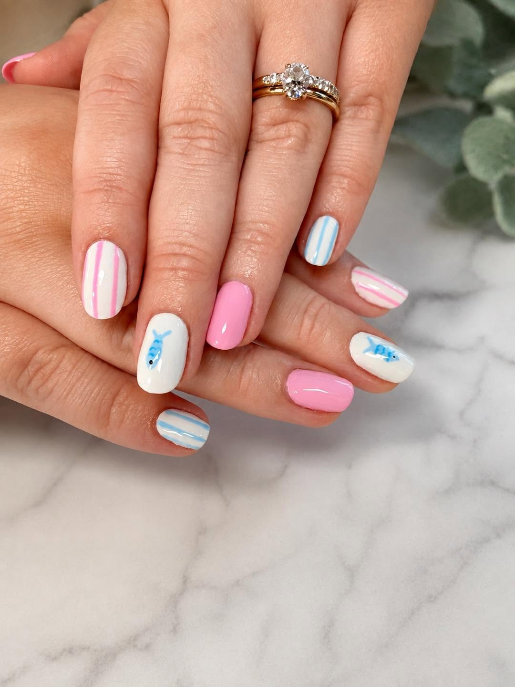
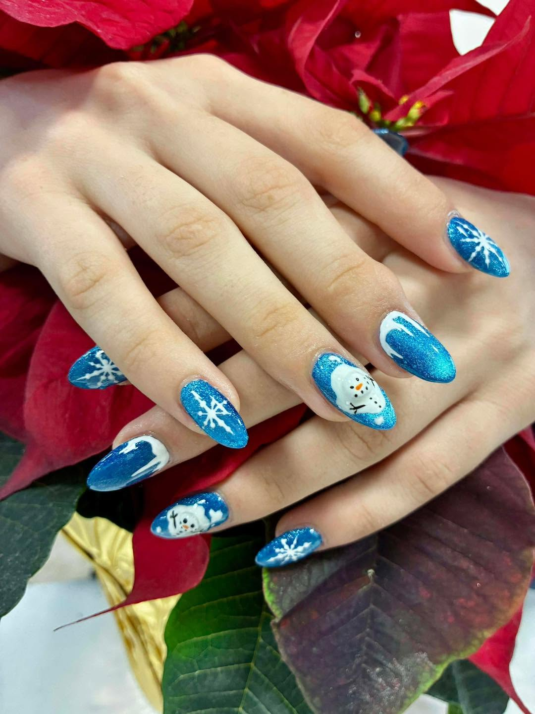
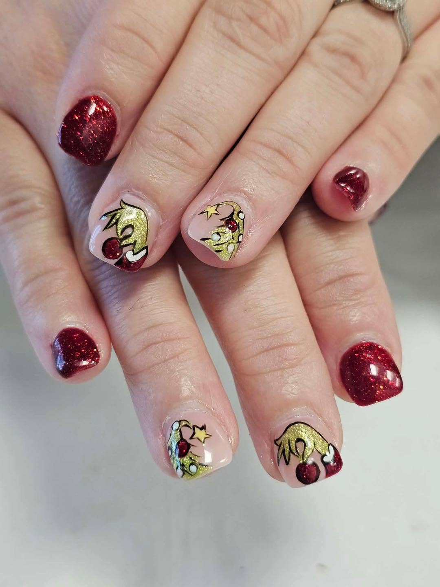
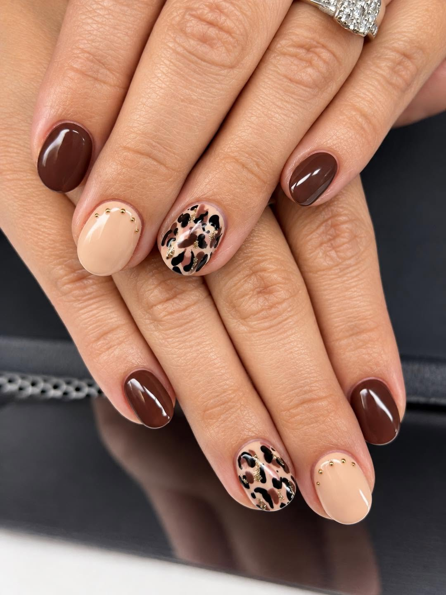

Pure Nails Spa is a nail salon at 405 Stone Wood Dr in Broken Arrow. Reviewers call it cute and adorable, clean and calm, with a decorated interior. Walk-ins are welcome.

The salon emphasizes sanitation and uses an autoclave to sterilize its tools.
Nail services are performed by licensed technicians.
Reviewers describe the salon as clean, calm, and decorated for comfort.
From a tidy manicure to custom freehand nail art, the menu covers hands, feet, and everything in between.
Classic manicure care, plus Shellac, gel manicure, and structure gel manicure options for longer wear.
Pedicure treatments including the cucumber mint pedicure and the deluxe pedicure for a deeper reset.
Dip-powder sets, acrylic nails, and fill-ins, in shades from quiet neutrals to statement color.



"Cute and adorable," clean, and calm: the words Facebook reviewers reach for most.From Facebook reviews of the salon
Pure Nails Spa is open Tuesday through Saturday, 10:00 AM to 7:00 PM, and Sunday 12:00 PM to 5:00 PM. Walk-ins welcome. Call to book your visit.